Manual de Montaje - Incubadora Libreincu 150 v1¶
1. Introducción¶
Este manual describe el proceso de montaje de la incubadora Libreincu 150 v1, un sistema automatizado para incubación de huevos con control de temperatura, humedad y rotación.
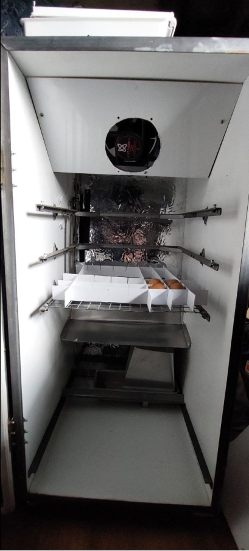
Figura 1. Interior del equipo.
Dimensiones¶
| Parámetro | Medida |
|---|---|
| Ancho interno | 470 mm |
| Profundidad interna | 500 mm |
| Alto interno | 970 mm |
| Bandejas | 400 × 400 mm |
| Separación vertical entre ejes | 120 mm |
| Separación entre bandeja pivotante y pared | 30 mm |
| Separación entre eje superior e inferior | 240 mm |
| Altura del deflector desde la base | 300 mm |
| Distancia del deflector al fondo | 70 mm |
| Inclinación principal del deflector | 20° hacia abajo |
| Paños del deflector | 115, 60 y 50 mm |
| Pliegues del deflector | 60° y 30° |
2. Componentes del Sistema¶
2.1 Sistema de Control Electrónico¶
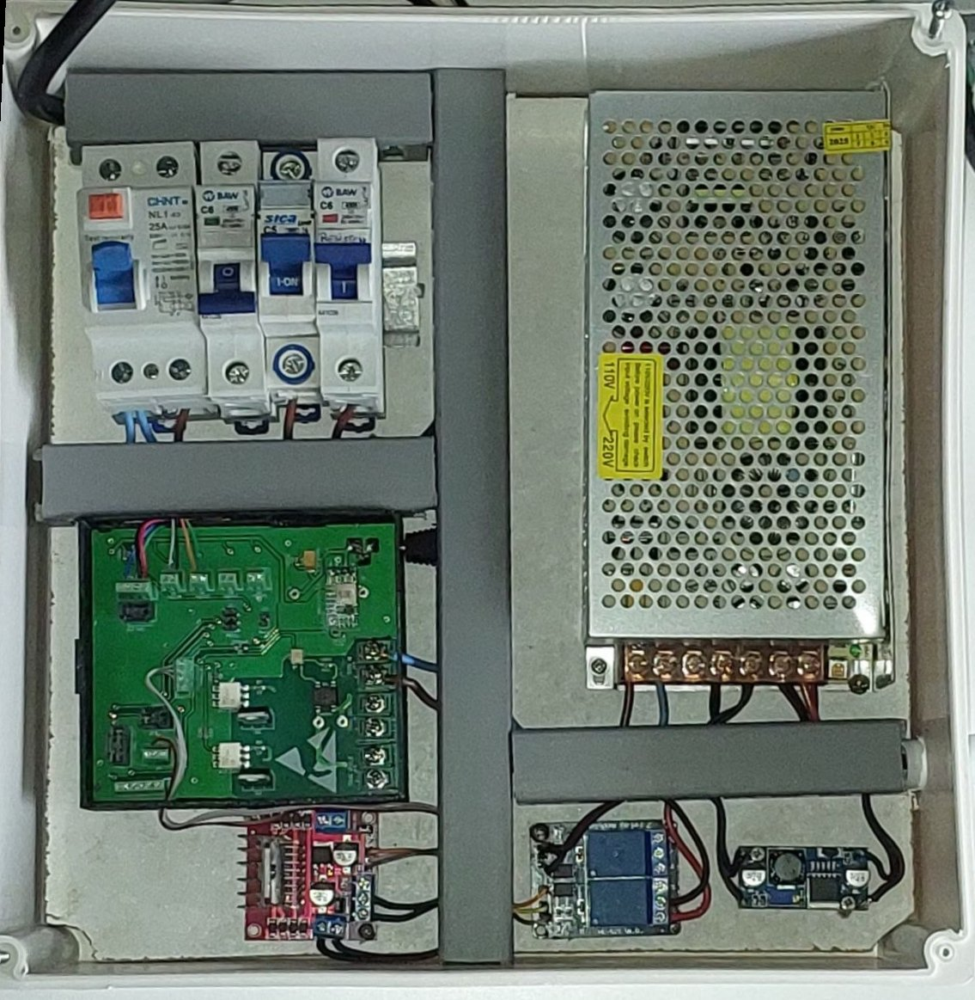
Figura 2. Tablero eléctrico del equipo.
| Componente | Descripción |
|---|---|
| Protecciones | Disyuntor diferencial e interruptores termomagnéticos. |
| Alimentación | Fuente de 220 V CA a 12 V CC y step-down de 12 V CC a 5 V CC. |
| Placa Olivia Control | ESP32 con WiFi; salida TRIAC para la resistencia de 200 W a 220 V CA; comunicación I2C con el BME280; entradas para los sensores de posición de las bandejas y salidas para puente H y relés. |
| Módulo puente H | Control del motor de rotación. |
| Módulo de relés | Control de la bomba del humidificador. |
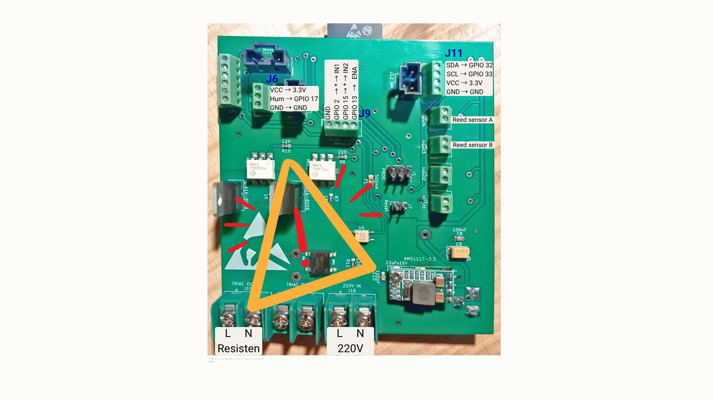
Figura 3. Placa Olivia Control V2.
2.2 Sistema Mecánico de Rotación¶
| Componente | Descripción |
|---|---|
| Soportes de 8 mm | KL08 para las bandejas y KP08 para el tornillo. |
| Transmisión | Soportes, motor, acople de 8 mm y tornillo THSL. |
| Carro de elevación | Dos tuercas THSL; sube y baja sobre el tornillo. |
| Cuna para bandejas | Estante pivotante para bandejas de 40 × 40 cm. |
| Sensores reed | Dos sensores magnéticos para las posiciones superior e inferior. |
| Finales de carrera | Dos interruptores de protección mecánica. |
| Seguidor y perno de bandejas | Oscila en la ranura horizontal del carro. |
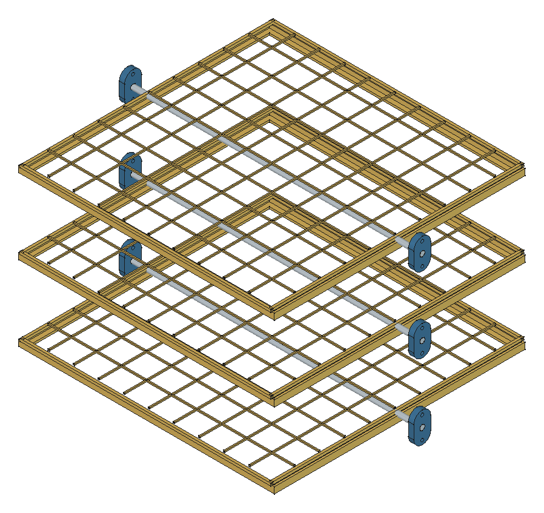
Vista CAD de referencia: bandejas, cunas, ejes y soportes, esta vista muestra la disposición general.
Descargar STEP del diseño guardado: conjunto completo, bandejas y soportes, husillo, KP08 y acople.
2.3 Sistema de Humidificación¶
| Componente | Descripción |
|---|---|
| Electroválvula | Control del suministro de agua. |
| Bomba de agua | Impulsión de agua al aspersor. |
| Manguera y conector | Manguera de 10 mm y adaptador de 10 a 6 mm. |
| Aspersor | Pico de 6 mm. |
| Soporte del aspersor | Ángulo L empotrado. |
3. Preparación del Montaje¶
3.1 Materiales Necesarios¶
- Mueble terminado.
- Tablero eléctrico.
- Elementos del sistema mecánico de rotación.
- Sensores reed y finales de carrera.
- Elementos del sistema de humidificación.
- Herramientas de montaje.
- Tornillos y accesorios.
3.2 Verificación de Seguridad¶
- Verificar que no haya tensión eléctrica en el sistema.
- Confirmar que todos los componentes estén presentes.
- Revisar los elementos de protección personal.
- Asegurar espacio y ventilación adecuados.
4. Montaje del Sistema de Control¶
4.1 Instalación de la Placa ESP32¶
Montar la placa Olivia Control en el gabinete previamente acoplado al tablero eléctrico de la incubadora, observando la ubicación de ranuras y orificios para el cableado.
4.2 Conexión al sensor BME280¶
Conector J11 — I2C.
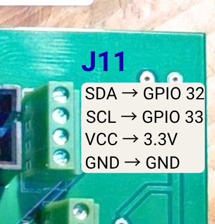
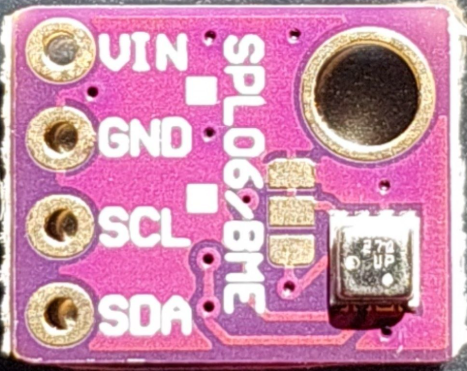
Figuras 4 y 5. J11 y sensor BME280.
| Señal de J11 | PinOut ESP32 |
|---|---|
| SDA | GPIO 32 |
| SCL | GPIO 33 |
| VCC | 3,3 V |
| GND | GND |
4.3 Conexión al relé del Humidificador¶
Conector J6. La alimentación de los relés del módulo, JVCC, se conecta a la salida de 5 V CC del step-down.
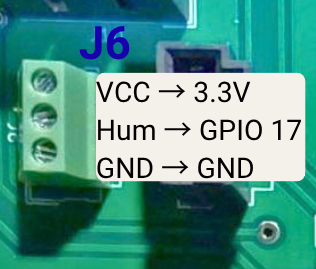
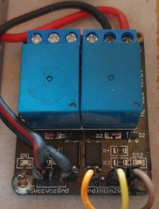
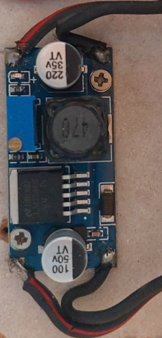
Figuras 6–8. J6, módulo de relés y step-down. La alimentación JVCC de los relés es de 5 V; Hum/GPIO 17 debe accionar el mismo canal cuya salida NormalOpen conmuta la bomba.
| Señal de J6 | PinOut ESP32 |
|---|---|
| VCC | 3,3 V |
| Hum | GPIO 17 |
| GND | GND |
Los contactos NO —normalmente abiertos— del relé se conectan como interruptor en uno de los cables de alimentación de la bomba de agua.
Conectar Hum/GPIO 17 a la entrada IN1 o IN2 del canal elegido. La bomba debe conectarse a la salida NO de ese mismo relé. Puede utilizarse cualquiera de los dos canales, siempre que la entrada de control y la salida de la bomba correspondan al mismo relé.
Conectar GND y VCC del módulo a las señales correspondientes de J6, conservando la alimentación JVCC de los relés a 5 V CC.
4.4 Conexión al Puente H de Rotación¶
Conector J9 — Motor A. Retirar el jumper que normalmente puentea ENA en el módulo.
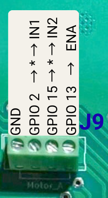
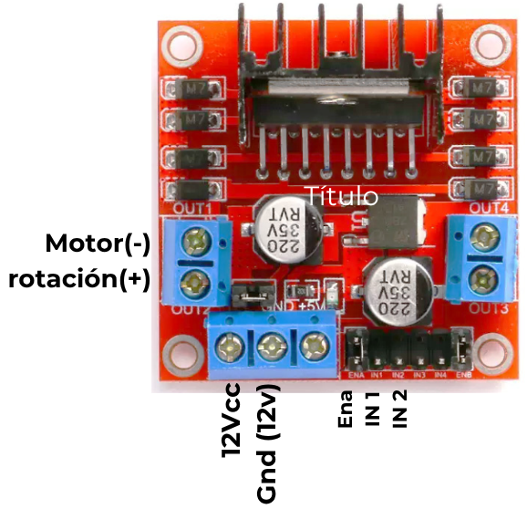
Figuras 9 y 10. Señales de J9 y conexiones rotuladas del puente H; los asteriscos indican la interrupción mediante finales de carrera.
| Señal de J9 | Conexión al puente H |
|---|---|
| GND | GND |
| GPIO 2 | IN1, pasando por el final de carrera A |
| GPIO 15 | IN2, pasando por el final de carrera B |
| GPIO 13 | ENA |
4.5 Conexiones de Sensores Reed¶
| Entrada | PinOut ESP32 | Sensor |
|---|---|---|
| Input4 | GPIO 35 | Reed A: posición superior |
| Input3 | GPIO 34 | Reed B: posición inferior |
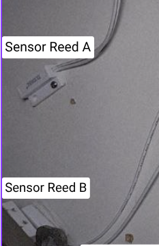
Figura 11. Sensores magnéticos de posición superior e inferior.
4.6 Conexiones de Finales de Carrera¶
Los finales de carrera interrumpen las señales de mando del puente H:
- Final de carrera A: interrumpe el cable entre Motor A de Olivia, GPIO 2, y IN1 del puente H.
- Final de carrera B: interrumpe el cable entre Motor A de Olivia, GPIO 15, y IN2 del puente H.
5. Montaje del Sistema Mecánico¶
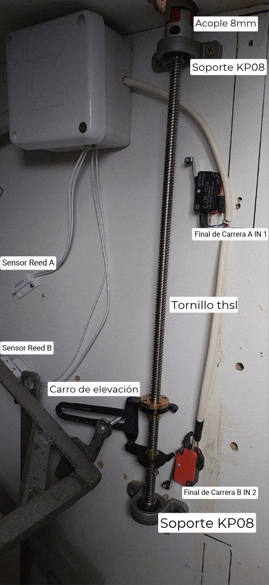
Figura 12. Disposición del mecanismo de rotación.
5.1 Ensamblaje del Tornillo de Rotación¶
- Montar el carro de elevación.
- Insertar y ajustar las dos tuercas en el carro.
- Enhebrar el carro sobre el tornillo.
- Ajustar la altura inicial, de la mitad del husillo hacia abajo.
- Montar el soporte del motor y los soportes KP08.
- Anclar el soporte superior KP08 al mueble y ajustar el husillo THSL mediante los prisioneros del soporte con una llave Allen de 1,5 mm. Dejar que sobresalga hacia arriba aproximadamente 12 mm.
- Colocar y anclar el otro soporte KP08 al mueble.
- Ajustar el acople de 8 mm al motor y al tornillo.
- Colocar el soporte del motor revisando que las distancias entre acoples no superen 1 mm ni queden apretadas.
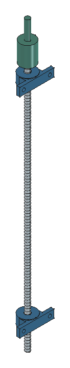
Vista CAD de referencia: husillo, KP08 y acople.
5.2 Identificación de los Soportes¶
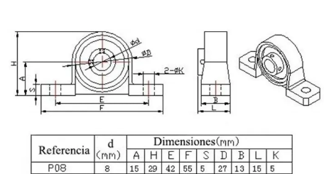
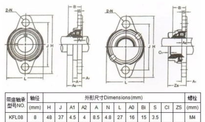
Figuras 13 y 14. Referencias de los soportes KP08 y KFL08.
Deflector¶
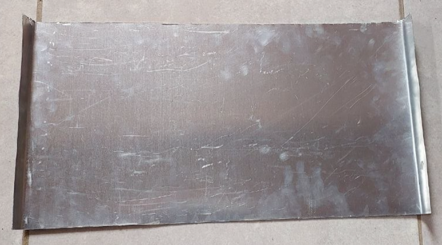
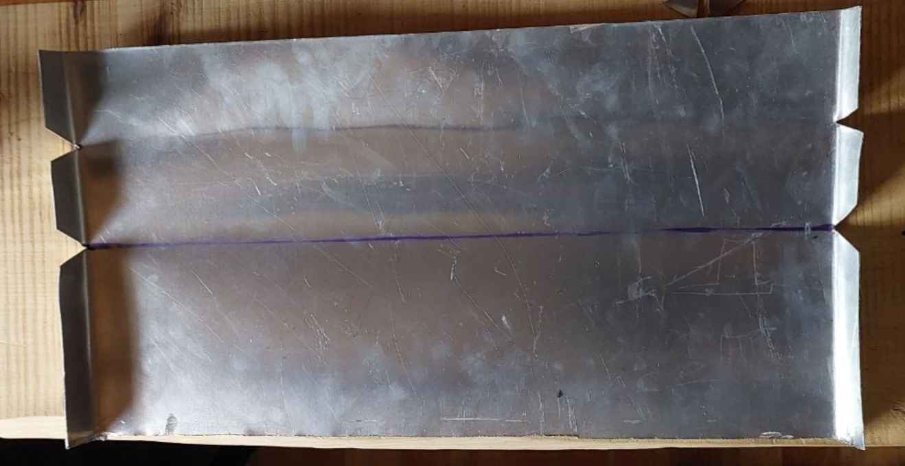
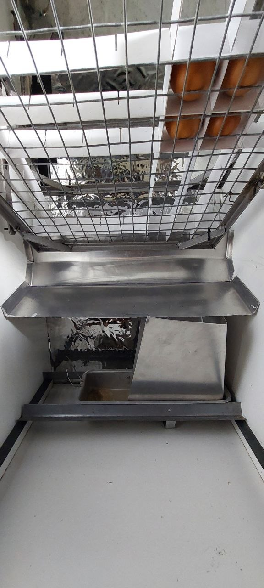
Figuras 15–17. Chapa del deflector, plegado e instalación debajo de las bandejas.
| Parámetro del desarrollo | Medida |
|---|---|
| Espesor de chapa | 0,5 mm |
| Largo del desarrollo | 225 mm |
| Ancho útil | 470 mm |
| Pestañas laterales | 15 mm por lado |
| Ancho total, con pestañas | 500 mm |
| Paños | 115 + 60 + 50 mm |
| Líneas de pliegue desde un extremo | 115 y 175 mm |
- Cortar chapa de 0,5 mm con un desarrollo de 225 × 500 mm, que deja 470 mm de ancho útil y pestañas laterales de 15 mm por lado.
- Marcar los pliegues a 115 mm y 175 mm desde un extremo, para formar paños de 115, 60 y 50 mm.
- Cortar las aletas en V sobre las líneas que se van a plegar.
- Dar al paño principal una inclinación de 20° hacia abajo, con pliegues de 60° y 30°, siguiendo la disposición de las fotografías de la fuente.
- Preparar los seis laterales de 15 mm, desbarbar y verificar que el deflector no interfiera con las bandejas ni las paredes.